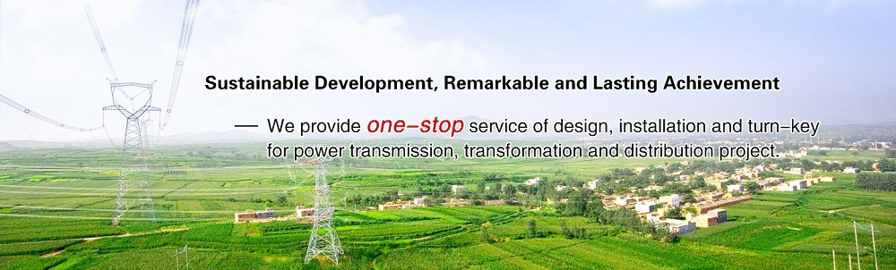
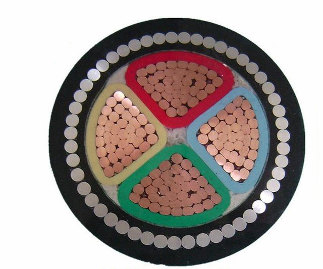
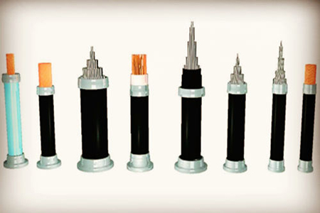
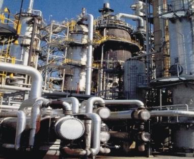
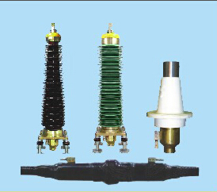

STOCK : 009229 |
|
|
|
|
|

| Power Cable |

This kind of systen's cable part possess such characteristics as high working-temperature ,large transmission capacity,good electrical performance,convenience to be erected and laid,low fault rate and easy maintenance etc. The products have replaced oil-filled cables step to be used in power network of power station and cities.
Executive standard of enterprise GB/t11017,GB/Z18890 refers to international standard IEC60840.And some performance requirements are stricter than IEC60840.IEC62067.
Our company adopts such advanced manufacture equipment as a vertical cross-linking cable production line with 500kV manufactured by TROESTER company and a vertical EHV cross-linking cable production line manufactured by NOKIA company. And inspection equipment imported from Swwitzerland HAFFLLY company makes the products more reliable.
TYPE：YJV YJLV YJY YJLY YJAY YJLAY YJAY-Z YJLAY-A YJLW02 YJLLW02 YJTW02 YJLTW02 YJLW02-Z YJLLW02-Z YJTW02-Z YJLTW02-Z YJLW03 YJLLW03 YJTW03 YJLTW03 YJLW03-Z YJLLW03-Z YJTW03-Z YJLTW03-Z

This kind of products possess such characteristics as safe-use,weather-resistance,abrasion-resistance,high mechanical intensity,low line loss,etc.They can be used broadly in power network reconstruction of cities and forest zones.And they can enhance the safety and reliability of the power network.

This kind of products possess such characteristics as flame retardance,ultraviolet resistance,chemical medium resistance,etc.So it's broadly used in petro chemical trade to transmit power energy in flammable and easy to explosion surroundings.The allowable long term Working temperature of the conductor in short circuit is less than 250℃;the allowable long-term working temperature of PVC insulated electrical cable for petro chemical use is 70℃,the highest working temperature of the conductor in short circuit does not exceed 160℃.
TYPE：ZA-HF-YJV(Y) ZA-HF-YJLV(Y) ZB-HF-YJV(Y) ZB-HF-YJLV(Y) ZC-HF-YJV(Y) ZC-HF-YJLV(Y) ZA-HF-YJV22(3) ZA-HF-YJVL22(3) ZB-HF-YJV22(3) ZB-HF-YJVL22(3) ZC-HF-YJV22(3) ZC-HF-YJVL22(3) ZA-HF-YJV32(3) ZA-HF-YJVL32(3) ZB-HF-YJV32(3) ZB-HF-YJVL32(3) ZC-HF-YJV32(3) ZC-HF-YJVL32(3) ZA-HF-VV ZA-HF-VLV ZB-HF-VV ZB-HF-VLV ZC-HF-VV ZC-HF-VLV ZA-HF-VV22 ZA-HF-VLV22 ZB-HF-VV22 ZB-HF-VLV22 ZC-HF-VV22 ZC-HF-VLV22 ZA-HF-VV32 ZA-HF-VLV32 ZB-HF-VV32 ZB-HF-VLV32 ZC-HF-VV32 ZC-HF-VLV32 ZA-HF-VV42 ZA-HF-VLV42 ZB-HF-VV42 ZB-HF-VLV42 ZC-HF-VV42 ZC-HF-VLV42 ZA-HF-KVV ZB-HF-KVV ZC-HF-KVV ZA-HF-KVVP ZB-HF-KVVP ZC-HF-KVVP ZA-HF-KVVP2 ZB-HF-KVVP2 ZC-HF-KVVP2 ZA-HF-KVV22 ZB-HF-KVV22 ZC-HF-KVV22 ZA-HF-KVV32 ZB-HF-KVV32 ZC-HF-KVV32 ZA-HF-KVVR ZB-HF-KVVR ZC-HF-KVVR ZA-HF-KVVRP ZB-HF-KVVRP ZC-HF-KVVRP
Remarks:Three classes of flame-retardance:class A(ZA),class B(ZB),class C(ZC)

Adopting the equipment inspect machine from swiss and Germany make, this kind of products have good quality,safe reliablity,excellent contaninothion resistance,ageing resistance an cold resrstance.No longituinal mold seam,easy and quick install ation are the result of using cold-shrinkable technology,the same specification products can apply to various outer diameter cables and can be broadly used in electric power,petroleum and chemical,metallargy,mine......
TYPE：HL-YJZWFC-220 HL-YJZWC-220 HL-YJJJI-220 HL-YJJTI-220 HL-YJZGG-220 HL-YJZWFC-110 HL-YJZWC-110 HL-YJZWG-110 HL-YJJJI-110 HL-YJJTI-110 HL-YJZGG-110
|
| Copyright © ZHANG ZHANG YAO Cable Co., Ltd. All Rights Reserved |